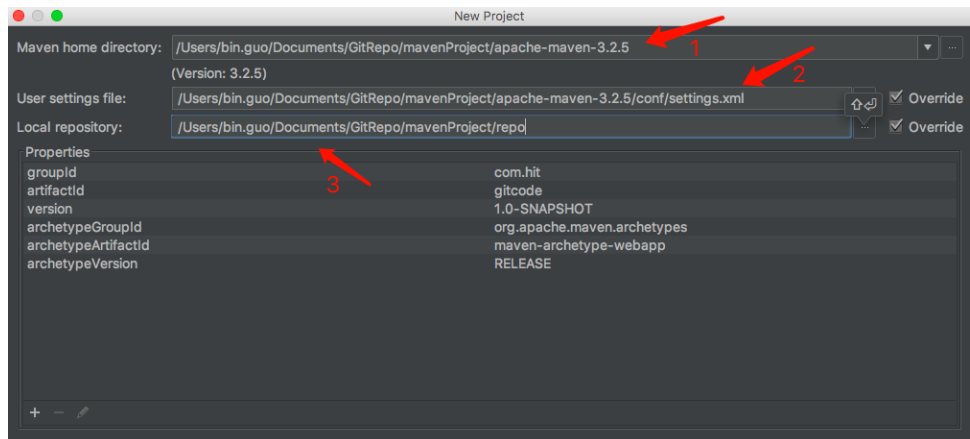
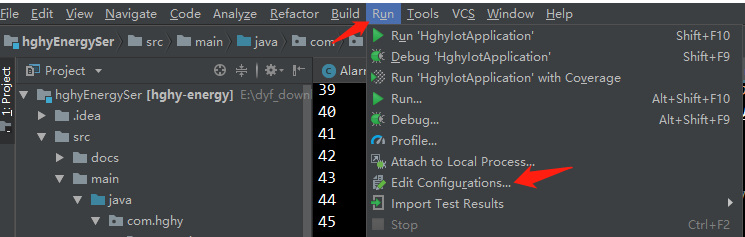
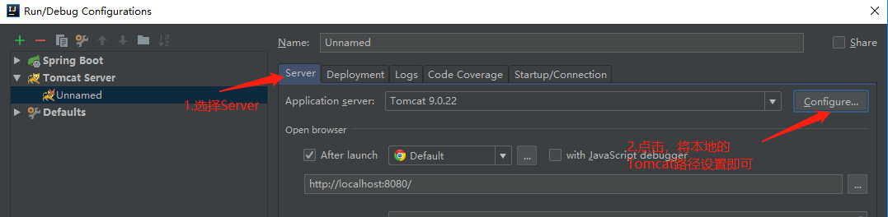
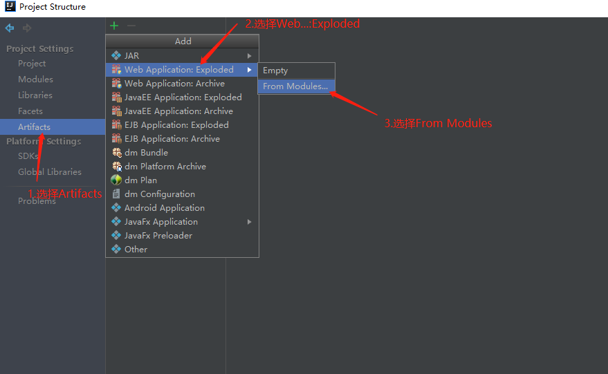

Maven–学习笔记(包含Maven视频)
Lesson1 Maven概述
NO1.1 Maven简介
Java程序员常在IDEA中使用Maven来创建工程。
- Maven：
- 定义：Maven是基于项目对象模型(POM)，可以通过一小段描述信息来管理项目的构建、报告和文档的软件项目管理工具。Maven是一个跨平台的项目管理工具，是Apache组织中的一个开源项目；Maven主要服务于基于Java平台的项目构建、依赖管理和项目信息管理；
- 其他项目构建工具：
- Make(Make由一个名为Makefile的脚本文件驱动，该文件使用Make自己定义的语法格式)；
- Ant(即Another Neat Tool，另一个整洁的工具，它最早用来构建Tomcat，可以看成是Java版本的Make)；
NO1.2 Maven的安装
Maven的安装比较简单。
- 基本步骤：
- 安装JDK1.8以上，并在环境变量里配置好Java，即安装Java，配置好JAVA_HOME；
- 下载Maven，即下载apache-maven-3.x-bin.zip文件；
- 解压Maven到本地自定义目录中，在环境变量中，配置一个
M2_HOME或MAVEN_HOME变量(变量名二选一即可)，和配置JAVA_HOME步骤差不多；
Lesson2 Maven基础
NO2.1 Maven的中央仓库配置和本地仓库配置
要使用Maven，首先要配置好中央仓库和本地仓库。
配置maven的中央仓库。
介绍：中央仓库是一个集合了框架、插件的JAR包的仓库，以供开发者下载，简单的将，就是一个远程的JAR包仓库，就像超市一样，我们要什么样的JAR包，直接从这个中央仓库下载就行了。
基本步骤：
当构建一个Maven项目时，首先检查pom.xml文件以确定依赖的JAR包的下载位置。也就是说，先检查pom.xml文件，确定要下载哪些JAR包，然后确定从哪里下载，执行顺序如下：
- 从本地仓库中查找并获得JAR包，如果没有，就执行下面一步；
- 上面没有找到的JAR包，会从Maven默认的中央仓库(
http://repo1.maven.org/maven2/)中查找并获得所需的JAR包，如果没有，就执行下面一步； - 如果在pom.xml文件中定义了自定义的远程仓库，那么也会在自己制定的这个仓库中进行查找并获得所需的JAR包，如果都没有找到，那么Maven就会抛出异常。
我们一般不会使用默认的Maven远程中央仓库，因为那个默认的中央仓库服务器是在国外，网速特别慢，不利于项目的构建，所以我们都很修改默认的中央仓库，即将中央仓库的镜像换成阿里云的。找到Maven的安装目录，找到安装目录中的conf文件夹，点击进入，找到settings.xml配置文件，这个就是Maven的配置文件了，用Notepad++打开该文件，找到
<mirror>标签，并添加下面内容：<mirror> <id>nexus-aliyun</id> <name>nexus-aliyun</name> <url>http://maven.aliyun.com/nexus/content/groups/public</url> <mirrorOf>central</mirrorOf> </mirror>
配置maven的本地仓库。
介绍：本地仓库，即从中央仓库下载的JAR包，会统一放到本地仓库中，所以需要我们配置本地仓库；
基本步骤：
默认的本地仓库：如果不配置本地仓库，会使用默认的本地仓库，地址为：
C://Users//Administrator//.m2//repository，不建议使用默认的；自定义本地仓库(推荐)：打开Maven的安装目录，找到conf目录下的settings.xml文件，添加一个
<localRepository>标签即可(如果已经有该标签，直接修改值即可)。<localRepository>自定义的本地仓库安装目录</localRepository> 如： <localRepository>E:xxx/myrepository</localRepository> 拓展：项目的依赖获取顺序：本地仓库 > 远程仓库(其实就是公司自己搭建的私服所使用的本地仓库) > 远程中央仓库；
NO2.2 Maven项目的创建
Maven创建项目能够提高项目的创建效率。
Maven项目的创建：
使用命令行创建Maven项目：使用命令行创建目录、打包项目，该方式不常用于Windows，但是常用于LUNIX等系统；两种方式：
方式一：在指定目录文件夹路径下，命令行输入指令：
mvn archetype:generate，按回车键后，根据提示选择archetype类型进而创建项目，最后确认创建项目即可；如果是第一次使用，需要下载一些插件，稍等几分钟即可；方式二(Linux中推荐)：在命令行输入的命令中直接指定参数：
mvn archetype:generate -DgroupId=cn.dyf.springMVC -DartifactId=springMVC -DarchetypeArtifactId=maven-archetyp //使用命令行打包项目：mvn package //将Maven创建的项目，转换成能够在IDEA上打开的样式：mvn idea:idea //将普通的项目转为Maven项目：在项目上点击右键，点击Add Frameworks Support(项目支持的意思)，勾选Maven即可
使用IDEA创建Maven项目：该方式常用于Windows中。基本步骤：
点击Create New Project，也就是创建新的项目；
选择Maven项目，再选择Create from archetype(选择指定模板创建项目)，最后根据自身情况选择maven-archetype-webapp或者maven-archetype-quickstart即可(这两个比较常用)；
maven-archetype-quickstart模型创建出来的文件结构如下；
maven-archetype-webapp模型创建出来的文件结构如下；
maven提供的41中骨架原型；
设置groupid(项目组名，也是包名)和artifactid(项目名)；

选择maven版本、settings.xml文件、以及本地仓库；

检查项目名称是否需要重新修改，确认项目路径，最后点击finsh，完成项目创建；
NO2.3 IDEA中的Tomcat配置和Maven项目启动
当配置好Maven并编写完程序后，我们常常会想要启动Tomcat来跑一跑我们创建的Maven项目。
IDEA中配置Tomcat，并使用Tomcat启动Maven创建的项目：
IDEA的菜单栏点击Run，选择EDit Configurations；

选择EDit Configurations选项后，出现对话框，点击“+”号，选择Tomcat Server(Tomcat服务器)，选择Local；
最后点击Configure按钮，将本地安装的Tomcat路径设置进去即可；

将项目部署到Tomcat上；
方式一：


方式二：
检查项目启动环境的，即查看Artifacts中是否已经放入了要启动的项目和所需的JAR包；

NO2.4 Maven依赖
我们来介绍一下Maven的一些常用概念。
Maven依赖解析：
三个向量：使用如下三个向量在Maven的仓库中确定一个唯一的Maven工程；
groupid：公司或组织的域名倒序 + 当前项目名称(因为一个公司不可能只有一个项目)。如，cn.xxx.product；artifactld：当前项目的唯一名称；version：当前项目的版本；
依赖范围：Maven依赖的默认范围是compile；也就是除了groupid、artifactld、version三个必要的要素之外，还有个scope(范围)，一般都不写，默认范围就是compile；
NO2.5 Maven常用命令
Maven中有一些命令的使用频率很高。
- 常用命令：
clean：清理，即清除编译后的目录，也就是清除target目录下的所有文件(包括target文件夹本身)；compile：编译，即只编译src/main/java目录中的代码，不编译src/test/java中的代码；test-compile：编译src/main/test目录中的代码；test：运行src/main/test目录中的代码；注意：测试代码的类要求以XxxTest结尾，方便Maven的插件进行寻找并进行测试代码。package：将项目打包，Java项目打包成JAR包，Web项目打包成WAR包；install：发布项目到本地仓库，用在JAR包上，打包好的JAR包就可以被其他项目所使用。
NO2.6 Maven命令的生命周期
Maven命令的生命周期是什么呢？
- Maven命令的生命周期：
- 定义：Maven命令的生命周期(life-cycle)是由阶段(Phase)组成的，我们敲入的命令无法直接触摸到某生命周期，因为这不是我们控制的，是由Maven自身控制的，我们只能摸到某个生命周期的某个阶段(Phase)；如，最常见的命令 mvn clean，它其实要Maven做的不是执行Clean生命周期(你摸不到Clean生命周期)，而是执行Clean生命周期的clean阶段，因为Clean 生命周期有3种阶段(pre-clean/clean/post-clean)，而Maven约定为，执行某个阶段时，一定会执行该阶段前面的所有阶段；简单的说就是，人工键入的命令总是指向某生命周期的某个阶段，Maven引擎根据你指向的阶段去跑完阶段所在的生命周期的(某Life-Cycle)该阶段之前的所有阶段；
Maven拥有三套独立的生命周期：
Clean生命周期：该生命周期的目的是清理项目；pre-clean：执行清理前需要完成的工作；clean：清理上一次构建过程中生成的文件，比如编译后的class文件等；post-clean：执行清理后需要完成的工作。
Default生命周期：该生命周期定义了构建项目时所需要的执行步骤，它是所有生命周期中最核心部分；
Site生命周期：该生命周期的目的是建立和发布项目站点，Maven可以基于pom所描述的信息自动生成项目的站点，同时还可以根据需要生成相关的报告文档集成在站点中，方便团队交流和发布项目信息；pre-site：执行生成站点前的准备工作；site：生成站点文档；post-site：执行生成站点后需要收尾的工作；site-deploy：将生成的站点发布到服务器上。
NO2.7 Maven中父项目与子项目
有时候，我们需要在父项目中创建子项目，分布式项目中最常用这种方式。
创建父项目与子项目，只需要在基于Maven创建了父项目(package那一栏选择pom)后，创建Module子项目即可；基本步骤：
NO2.8 Maven依赖的传递性
依赖传递，简单讲就是引入的JAR又依赖于别的JAR包。
依赖传递性：
定义：即在项目往往需要引入多个依赖， 而引入的依赖又会引入其他的依赖；如，项目中引入了spring-core依赖，而spring-core又依赖commons-logging；因为项目直接引入了spring-core依赖，则spring-core为项目的第一直接依赖，而因为spring-core引入了commons-logging依赖， 则commons-logging为项目的一个传递性依赖；假设A(项目)依赖B，B依赖C(1.1版本)，B是A的直接依赖，C就是A的传递依赖，最后导入依赖D，D依赖C(1.2版本)，这时会产生依赖冲突；
当传递性依赖产生版本冲突时，Maven有几种解决方式：
Maven自身调解原则：
- 第一声明者优先原则：即谁先定义的就使用谁的传递依赖，也就是说在pom.xml文件中，谁放在前面就用谁的；
- 路径近者优先原则：即直接依赖高于传递依赖，也就是说使用的是直接依赖中所依赖的传递性依赖的版本，即为假设中的C(1.1版本)；
排除依赖：即手动去除冲突依赖中的一个即可：
pom.xml文件中的配置；
版本锁定(推荐使用)：即对依赖的版本进行统一；
//可以进行属性设置，所有jar包的依赖版本都直接引用相应的属性，便于以后升级（更改）版本 <!-- 属性 --> <properties> <spring.version>4.2.4.RELEASE</spring.version> <hibernate.version>5.0.7.Final</hibernate.version> <struts.version>2.3.24</struts.version> </properties> <!-- dependencyManagement标签的作用是指定依赖的版本，并不会导入依赖，锁定版本，struts2-2.3.24、spring4.2.4、hibernate5.0.7 --> <dependencyManagement> <dependencies> <dependency> <groupId>org.springframework</groupId> <artifactId>spring-context</artifactId> <version>${spring.version}</version> </dependency> <dependency> <groupId>org.hibernate</groupId> <artifactId>hibernate-core</artifactId> <version>${hibernate.version}</version> </dependency> <dependency> <groupId>org.apache.struts</groupId> <artifactId>struts2-core</artifactId> <version>${struts.version}</version> </dependency> </dependencies> </dependencyManagement> <!-- 这里才是导入依赖 --> <dependencies> <dependency> <groupId>org.springframework</groupId> <artifactId>spring-context</artifactId> </dependency> <dependency> <groupId>org.apache.struts</groupId> <artifactId>struts2-core</artifactId> </dependency> <dependency> <groupId>org.hibernate</groupId> <artifactId>hibernate-core</artifactId> </dependency> </dependencies>
NO2.9 Maven的私服
有些比较大型的公司会用于自己的Maven私服。
远程仓库(私服)Nexus里使用Maven；
定义：Nexus是一种私服，类似的还有chiva、Artifactory，主要用于Maven远程仓库，大型公司里项目中使用会多一些；
基本步骤：
下载Nexus并解压；
使用安装命令安装Nexus(安装目录不要有中文)，进入解压文件的bin目录下，基于管理员权限进入DOS命令行执行命令；
配置nexus；
在nexus的bin目录下使用命令行命令，启动服务；
访问nexus私服；
Nexus中常用的Maven仓库类型；
按照仓库名区分：
Central：中央仓库；3rd party：第三方仓库，比如手工上传的jar包就保存在这里；Apache Snapshots：apache 快照仓库；Releases：发行版本仓库；Public Respositories：仓库组，是上述所有仓库的聚合，对外提供统一的地址服务。
按照仓库类型区分：
group：仓库组，用来合并多个hosted/proxy仓库。如，Public Respositories；hosted：本地仓库，通常我们会部署自己的构件到这一类型的仓库。如，公司的第二方库(即存放本公司开发的JAR包)，Releases，3rd party；proxy：代理仓库，它们被用来代理远程的公共仓库。如，Maven中央仓库，Central，Apache Snapshots；
各种类型仓库直接的关系；
将JAR包上传到私服nexus：注意通过Maven的方式，即depoly；基本步骤：
添加nexus的管理账号
说明：需要注意的是，settings.xml中server元素下id的值必须与POM中repository或snapshotRepository下id的值完全一致；Maven在处理发布时会根据id查找用户名称和密码进行登录和文件的上传发布。在需要上传的项目中的pom.xml文件中，配置要上传的私服的仓库(url地址在私服仓库的Repository Path中可以找到，引用就可以)；
说明：<distributionManagement> 中的 <repository> && <snapshotsrepository>各自的含义，maven仓库分为两种release发布仓库(<repository>)和snapshot快照仓库(<snapshotsrepository>)；snapshot快照仓库用于保存开发过程中的不稳定版本，release正式仓库用来保存稳定的发行版本；定义一个组件/模块为快照版本：只需要在pom文件中的该模板的版本号后面加上 -SNAPSHOT就可以了，注意:必须是大写；maven会根据模块的版本号(pom文件中的<version>版本号</version>)中是否带有-SNAPSHOT来判断这个是快照版本还是正式版本。最后depoly到私服仓库即可；
从私服nexus下载JAR包：
在settings.xml中配置如下；
激活模板，也就是告诉Maven从我所指定的仓库下载JAR包；
本博客所有文章除特别声明外，均采用 CC BY-SA 4.0 协议 ，转载请注明出处！